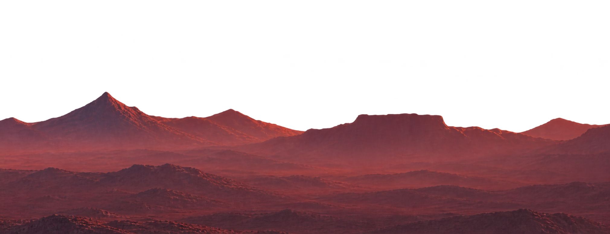
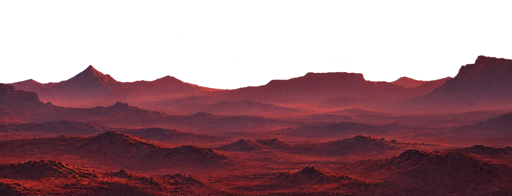
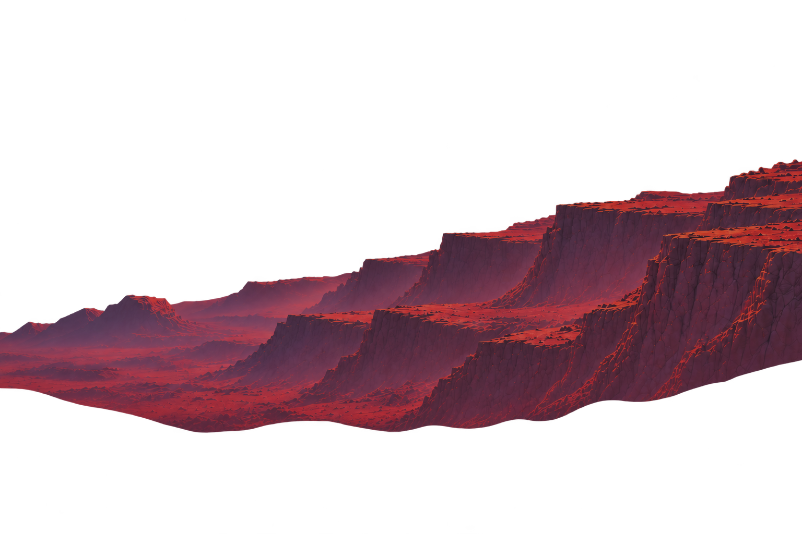

The Materiality
of the Final
Frontier
I am interested in what material artifacts and technologies reveal about the knowledge, ideas, and circumstances of the people who create and use them.
My interests bring together anthropology, material culture, prototyping, and digital heritage, with a particular fascination for space archaeology: the study of humanity’s material presence beyond Earth.
Photogrammetry &
Material Digitization
Photogrammetry, digital imaging, spatial modeling, and related techniques offer ways to capture material and spatial information, investigate complex forms, and develop digital representations of the physical world.
Technology
as Artifact
Objects carry traces of the people and societies that made and used them. Through material analysis, digitization, imaging, and reconstruction, how might we recover the decisions, skills, and histories embodied in artifacts?
The Material Traces
of Exploration
Spacecraft, scientific instruments, landing sites, and objects left on other worlds are an emerging archaeological record. What might they reveal about the knowledge, ambitions, and constraints of the societies that sent them there?